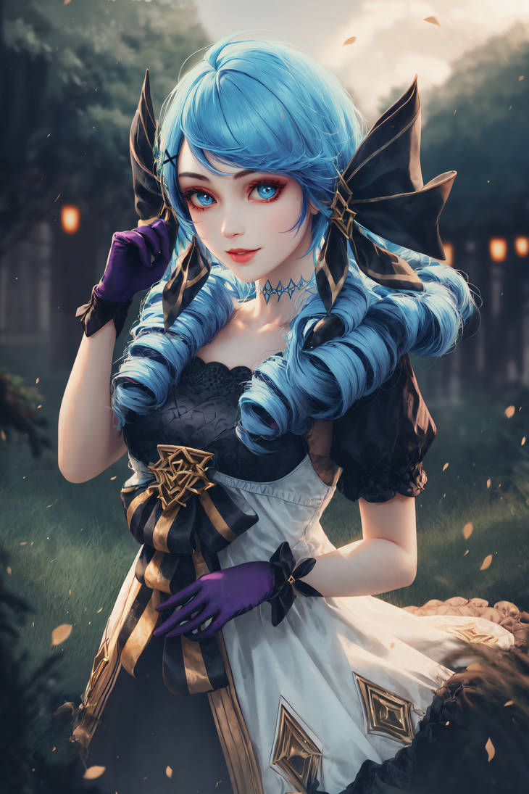

Giới Thiệu
Đây là dự án mới của tôi. Trong trang web này, tôi sẽ giới thiệu về Gwen và những điều Gwen yêu thích.
Hình Ảnh
Fan art

Model 3D của Gwen
Model tạo bởi AI
Bộ chiêu thức
- Nội tại: Ngàn Nhát Cắt. Đòn đánh thường của gwen gây thêm sát thương dựa theo % máu của gwen. Nếu mục tiêu của đòn đánh thường là tướng, Gwen sẽ được hồi lại một lượng máu bằng một phần của lượng sát thương.
- Q: Xoẹt Xoẹt. Gwen nhấp kéo cực nhanh và cắt kẻ địch, gây sát thương theo vùng hình nón. Đối với mỗi đòn đánh thường trúng kẻ địch trước khi Gwen sử dụng Q, cô sẽ nhấp kéo thêm một lần nữa (tối đa 4 lần). Kẻ địch ở vùng trung tâm kỹ năng sẽ phải nhận sát thương chuẩn và sát thương nội tại.
- W: Sương Lam Bất Bại. Gwen tạo ra một màn sương bao quanh bản thân trong 5 giây giúp cô tăng chỉ số phòng ngự. Kẻ địch ở ngoài màn sương sẽ không thể chọn Gwen là mục tiêu hay tung kỹ năng. Màn sương này sẽ đi theo khi cô bước ra bên ngoài lần đầu tiên và biết mất ở lần thứ hai.
- E: Xén Xén. Gwen lướt về hướng chỉ định, cô được tăng tầm đánh, sát thương và tốc đánh trong 4 giây. Tấn công kẻ địch trong thời tác dụng của hiệu ứng sẽ làm giảm một nửa thời gian hồi chiêu.
- R: Xe Chỉ Luồn Kim. Gwen phóng chiếc kim khâu và gây sát thương theo một đường thẳng. Mỗi chiếc kim sẽ áp dụng hiệu ứng tăng sát thương của nội tại và làm chậm kẻ địch. Gwen có thể dùng kỹ năng này tối đa ba lần nếu tung chiêu một cách chuẩn xác. Mỗi lần phóng kim sau sẽ tăng thêm 2 mũi kim, tổng cộng 9 mũi kim.
Tham Khảo
Để biết thêm thông tin, vui lòng truy cập Trang Web Tham Khảo.